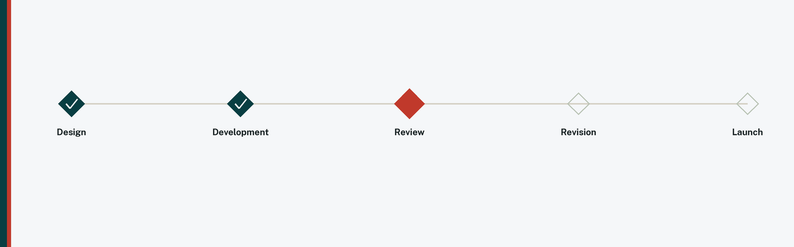

Instructional design is project management? More than you'd expect.
Ask a room of instructional designers whether they've considered a CAPM or PMP, and more hands go up than you'd expect. It shouldn't be a surprise. Course development almost never happens in a vacuum: it moves through subject matter experts, department chairs, compliance reviewers, sometimes legal, sometimes marketing, and every one of them has their own calendar and their own priorities. The instructional designer is usually the person holding the timeline together, and none of those other people report to them.
None of this makes instructional design a project management job. The core of the work is still learning theory, content, media, and assessment design, skills no PM credential teaches. But a real slice of the role is coordination, and that slice is rarely spelled out anywhere when you start. It's not in most job descriptions, and it's rarely covered in onboarding. Most instructional designers learn it on the job, by necessity, rather than being told upfront that it's part of what they signed up for.
ADDIE and SAM map the process, not the coordination
ADDIE and SAM are good models for what a course should go through: analysis, design, development, implementation, evaluation, or the faster iterative loops SAM is built around. What neither model spends much time on is what happens when a key collaborator's calendar fills up for two weeks, or when two rounds of well-intentioned feedback point in different directions. Those aren't edge cases. In my experience they're closer to the median week. The models describe an ideal path through the work. They don't describe how to keep the actual path moving across a team of people who each bring real expertise, and a full schedule of their own.
Timelines are a team outcome
When a course launches late, it's rarely because any one person fell behind. The more common story is dependencies stacking up across busy calendars: content arriving during a colleague's heaviest teaching weeks, a review queued behind three other courses, a decision that needed three people to sign off when only two were in the room. No one did anything wrong in that story. What actually determines the timeline is how well someone is tracking and coordinating those dependencies, and that's a project management skill, not strictly an instructional design one, even though instructional designers are usually the ones doing it out of necessity.
The models describe the path. Coordination is what keeps everyone moving along it together.
The skills that actually keep a course on track
None of this requires a certification to start practicing. It requires naming a handful of skills as real parts of the job, instead of things you pick up by accident after your third late launch.
Stakeholder mapping, which is simply knowing everyone who touches the course. Listing, before development starts, exactly who has to sign off on what, and in what order, means you're not discovering three weeks in that legal review was always going to be a two-week step you never planned around.
Dependency tracking. A dependency is anything that has to finish before something else can begin. Writing those down turns a vague "the course is behind" into "chapter three revisions are in progress, and the review stage is next in line after them," which is a completely different conversation to have with a program chair, and a much easier one to have well.
Risk identification, or spotting what could slow things down before it does. Everyone on a course team juggles competing priorities, so if a collaborator's busiest season lands mid-project, that's not a surprise to absorb quietly into the timeline. It's something you plan extra time around from the start.
Scope discipline. Scope is just the agreed size of the project. A "quick addition" requested mid-development makes the project bigger, and saying that out loud, kindly, is what keeps a six-week build from becoming a ten-week one without anyone actually deciding that should happen.
Communication cadence, meaning nothing fancier than a regular rhythm of short check-ins. That rhythm surfaces a delay at week two instead of week eight, while there's still enough time left to adjust together.
None of these are instructional design skills in the traditional sense. They're the difference between a course that's late because the work was hard, and a course that's late because nobody had a clear picture of what was waiting on what.
If you ever want to formalize this vocabulary, PMI's CAPM (opens in a new tab) is the accessible entry point and PMP (opens in a new tab) the advanced one; I'll admit I've put off both more than once, and writing this post is talking me back into it. But the certification isn't the point. The skills are, and every one of them is already sitting inside the course development process you're running right now.
← All posts